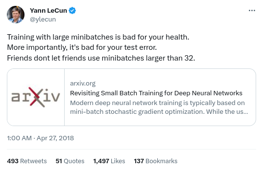

MNIST Classification#

In this tutorial we train a simple (fully-connected) model to classify handwritten digits from the MNIST dataset which contains \(28 \times28\) grayscale images like the following:

We flatten the 2D images to \(28 \times 28 = 784\) dimensional input vectors.
To train this model we first include the CPU operations (CPU implementations of primitive operations). Next, we include the CPU operations for all data structures in nn (we are mainly interested in the CPU operations of dense layers). We need to include these before including the operations of the models because the latter build upon the former, hence they should be defined apriori. Finally, we include the persistence operations for the containers which allows us to persist matrices, layers,
models, etc. to disk in the form of HDF5 files. In this tutorial, we are only interested in loading the MNIST dataset from an HDF5 file. The persistence functions are the only part that has an external dependency in the form of highfive a header-only C++ wrapper for the HDF5 API (which in turn is a requirement of highfive).
As described in CPU Acceleration we will use the OpenBLAS backend to speed up the training (and inference).
[1]:
#define RL_TOOLS_BACKEND_ENABLE_OPENBLAS
#include <rl_tools/operations/cpu_mux.h>
#include <rl_tools/nn/operations_cpu_mux.h>
#include <rl_tools/nn_models/operations_cpu.h>
#include <rl_tools/containers/persist.h>
namespace rlt = rl_tools;
To be able to open a HDF5 file and load datasets contained in it we include the highfive File API in the main code as well:
[2]:
#include <highfive/H5File.hpp>
Since highfive is header-only we only need to link hdf5 for cling to be able to use it:
[3]:
#pragma cling load("hdf5")
#pragma cling load("openblas")
Next, we define the usual types:
[4]:
using T = float;
using DEVICE = rlt::devices::DEVICE_FACTORY<rlt::devices::DefaultCPUSpecification>;
using TI = typename DEVICE::index_t;
For the MNIST classification, we are using a supervised training setup with a fully-connected neural network. The fully-connected network we are using consists of one input layer (\(784\) dimensional, one hidden layer (\(50\) dimensional), and one output layer (\(10\) dimensional). Since we like our health, we stick with a (mini) batch size of \(32\):

Furthermore, we use \(ReLU\) non-linearities for the hidden activations (output of the input and hidden layer) and no non-linearity for the output activations. Note that we need to define the dataset size apriori to stick to our design principle of having the size of all loops and data structures be known at compile time. Normally, the size of datasets in HDF5 files can vary and programs loading them can adapt. Theoretically, this is a minor limitation of RLtools but we did not find
it to be restricting practically.
More importantly, it’s bad for your test error. Friends dont let friends use minibatches larger than 32.
- height:
200
- class:
no-scaled-link
[5]:
constexpr TI BATCH_SIZE = 32;
constexpr TI NUM_EPOCHS = 1;
constexpr TI INPUT_DIM = 28 * 28;
constexpr TI OUTPUT_DIM = 10;
constexpr TI NUM_LAYERS = 3;
constexpr TI HIDDEN_DIM = 50;
constexpr auto ACTIVATION_FUNCTION = rlt::nn::activation_functions::RELU;
constexpr auto ACTIVATION_FUNCTION_OUTPUT = rlt::nn::activation_functions::IDENTITY;
constexpr TI DATASET_SIZE_TRAIN = 60000;
constexpr TI DATASET_SIZE_VAL = 10000;
constexpr TI NUM_BATCHES = DATASET_SIZE_TRAIN / BATCH_SIZE;
As in the previous examples we assemble the hyperparameters of the model into a stateless, compile-time specification struct and define the optimizer and model types:
[6]:
using STRUCTURE_SPEC = rlt::nn_models::mlp::StructureSpecification<T, DEVICE::index_t, INPUT_DIM, OUTPUT_DIM, NUM_LAYERS, HIDDEN_DIM, ACTIVATION_FUNCTION, ACTIVATION_FUNCTION_OUTPUT, 1>;
using OPTIMIZER_SPEC = rlt::nn::optimizers::adam::Specification<T, TI>;
using OPTIMIZER = rlt::nn::optimizers::Adam<OPTIMIZER_SPEC>;
using NETWORK_SPEC = rlt::nn_models::mlp::AdamSpecification<STRUCTURE_SPEC>;
using MODEL_TYPE = rlt::nn_models::mlp::NeuralNetworkAdam<NETWORK_SPEC>;
Furthermore, we declare the device, random number generator optimizer and model as well as buffers. The buffers are created with a batch size of \(1\) because for clarity we iteratively accumulate the gradient for each batch sample by sample in the training loop that is following later. Additionally, we declare and allocate containers for the training and validation data and buffer matrices for the training process:
[7]:
DEVICE device;
TI seed = 0;
auto rng = rlt::random::default_engine(typename DEVICE::SPEC::RANDOM(), seed);
OPTIMIZER optimizer;
MODEL_TYPE model;
typename MODEL_TYPE::Buffer<1> buffers;
rlt::MatrixDynamic<rlt::matrix::Specification<T, TI, DATASET_SIZE_TRAIN, INPUT_DIM>> x_train;
rlt::MatrixDynamic<rlt::matrix::Specification<T, TI, DATASET_SIZE_VAL, INPUT_DIM>> x_val;
rlt::MatrixDynamic<rlt::matrix::Specification<TI, TI, DATASET_SIZE_TRAIN, 1>> y_train;
rlt::MatrixDynamic<rlt::matrix::Specification<TI, TI, DATASET_SIZE_VAL, 1>> y_val;
rlt::MatrixDynamic<rlt::matrix::Specification<T, DEVICE::index_t, 1, OUTPUT_DIM, rlt::matrix::layouts::RowMajorAlignment<typename DEVICE::index_t>>> d_loss_d_output_matrix;
rlt::malloc(device, model);
rlt::malloc(device, buffers);
rlt::malloc(device, x_train);
rlt::malloc(device, y_train);
rlt::malloc(device, x_val);
rlt::malloc(device, y_val);
rlt::malloc(device, d_loss_d_output_matrix);
We use the freshly allocated containers for the dataset to load the MNIST images from the HDF5 file:
[8]:
std::string dataset_path = "/data/mnist.hdf5";
auto data_file = HighFive::File(dataset_path, HighFive::File::ReadOnly);
rlt::load(device, x_train, data_file.getGroup("train"), "inputs");
rlt::load(device, y_train, data_file.getGroup("train"), "labels");
rlt::load(device, x_val, data_file.getGroup("test"), "inputs");
rlt::load(device, y_val, data_file.getGroup("test"), "labels");
Like in the previous tutorial we reset the optimizer state (first and second order moments of the gradient) because they can contain arbitrary data after allocation and randomly initialize the weights of the model:
[9]:
rlt::reset_optimizer_state(device, optimizer, model);
rlt::init_weights(device, model, rng);
The following cell contains the full training loop for a single epoch (which is usually enough to classify the handwritten MNIST digits with a high accuracy). First, the gradient is set to zero, then for each sample we take a view (zero-copy) into the dataset to get the input and (one-hot encoded) output. We run the forward pass and use a categorical cross entropy loss to judge the similarity of the output distribution (logits that correspond to a softmax over the digits 0-9) and the empirical
distribution (one-hot) taken from the ground-truth label. For the training we are only interested in the ::gradient of this loss but for monitoring the training process we additionally calculate the actual loss value as well. Using the gradient of the loss function (pushing up the logit of the correct digit and pushing down the logits of the wrong digits) we invoke the backpropagation algorithm to calculate and accumulate the gradient of the loss of this example wrt to all parameters in the
model.
Once we finished the loss calculation and gradient accumulation for all samples in the batch we can invoke the optimizer using the rlt::step operator. In this update step the previously selected optimizer Adam calculates its required statistics (first and second order moment of the gradient of each parameter in the model) and updates the parameters based on it. We iterate through all (full) batches available in the dataset (making up one epoch):
[10]:
for (int batch_i=0; batch_i < NUM_BATCHES; batch_i++){
T loss = 0;
rlt::zero_gradient(device, model);
for (int sample_i=0; sample_i < BATCH_SIZE; sample_i++){
auto input = rlt::row(device, x_train, batch_i * BATCH_SIZE + sample_i);
auto output = rlt::row(device, y_train, batch_i * BATCH_SIZE + sample_i);
auto prediction = rlt::row(device, model.output_layer.output, 0);
rlt::forward(device, model, input);
rlt::nn::loss_functions::categorical_cross_entropy::gradient(device, prediction, output, d_loss_d_output_matrix, T(1)/((T)BATCH_SIZE));
loss += rlt::nn::loss_functions::categorical_cross_entropy::evaluate(device, prediction, output, T(1)/((T)BATCH_SIZE));
rlt::backward(device, model, input, d_loss_d_output_matrix, buffers);
}
loss /= BATCH_SIZE;
rlt::step(device, optimizer, model);
if(batch_i % 100 == 0){
std::cout << "batch: " << batch_i << "/" << NUM_BATCHES << " loss: " << loss << std::endl;
}
}
batch: 0/1875 loss: 0.280092
batch: 100/1875 loss: 0.0254528
batch: 200/1875 loss: 0.0289113
batch: 300/1875 loss: 0.00838864
batch: 400/1875 loss: 0.00909101
batch: 500/1875 loss: 0.0176317
batch: 600/1875 loss: 0.0102458
batch: 700/1875 loss: 0.00427032
batch: 800/1875 loss: 0.00866193
batch: 900/1875 loss: 0.00429899
batch: 1000/1875 loss: 0.0209082
batch: 1100/1875 loss: 0.00755304
batch: 1200/1875 loss: 0.00581567
batch: 1300/1875 loss: 0.00471603
batch: 1400/1875 loss: 0.00802572
batch: 1500/1875 loss: 0.00992347
batch: 1600/1875 loss: 0.0063443
batch: 1700/1875 loss: 0.00276589
batch: 1800/1875 loss: 0.00870133
In the following we validate the trained model on a held-out validation dataset and print some examples of classified handwritten digits. Finally we print the classification accuracy on the valiation set which should be above \(90\%\) in our experience which is quite surprising given that we only use a simple, full-connected neural network as the model:
[11]:
T val_loss = 0;
T accuracy = 0;
for (int sample_i=0; sample_i < DATASET_SIZE_VAL; sample_i++){
auto input = rlt::row(device, x_val, sample_i);
auto output = rlt::row(device, y_val, sample_i);
rlt::forward(device, model, input);
val_loss += rlt::nn::loss_functions::categorical_cross_entropy::evaluate(device, model.output_layer.output, output, T(1)/BATCH_SIZE);
TI predicted_label = rlt::argmax_row(device, model.output_layer.output);
if(sample_i % 1000 == 0){
for(TI row_i = 0; row_i < 28; row_i++){
for(TI col_i = 0; col_i < 28; col_i++){
T val = rlt::get(input, 0, row_i * 28 + col_i);
std::cout << (val > 0.5 ? (std::string(" ") + std::to_string(predicted_label)) : std::string(" "));
}
std::cout << std::endl;
}
}
accuracy += predicted_label == rlt::get(output, 0, 0);
}
val_loss /= DATASET_SIZE_VAL;
accuracy /= DATASET_SIZE_VAL;
std::cout << "Validation accuracy: " << accuracy * 100 << "%" << std::endl;
7 7 7 7 7 7
7 7 7 7 7 7 7 7 7 7 7 7 7 7 7 7
7 7 7 7 7 7 7 7 7 7 7 7 7 7 7 7
7 7 7 7 7 7 7 7 7 7 7
7 7 7 7
7 7 7 7
7 7 7 7
7 7 7 7
7 7 7 7
7 7 7 7
7 7 7
7 7 7 7
7 7 7 7
7 7 7 7 7
7 7 7 7
7 7 7 7 7
7 7 7 7
7 7 7 7 7
7 7 7 7 7
7 7 7 7
9 9 9 9 9 9
9 9 9 9 9 9 9
9 9 9 9 9 9 9 9
9 9 9 9 9 9 9 9
9 9 9 9 9 9 9 9
9 9 9 9 9 9 9 9 9
9 9 9 9 9 9 9 9 9
9 9 9 9 9 9 9 9 9
9 9 9 9 9 9 9 9
9 9 9 9 9
9 9 9 9 9
9 9 9 9 9
9 9 9 9 9
9 9 9 9
9 9 9 9 9
9 9 9 9 9
9 9 9 9
9 9 9 9 9
9 9 9 9
9 9 9
6 6
6 6 6 6
6 6 6 6 6
6 6 6 6
6 6 6 6 6
6 6 6
6 6 6
6 6 6 6
6 6 6 6
6 6 6
6 6 6 6 6 6
6 6 6 6 6 6 6 6 6 6
6 6 6 6 6 6 6 6 6 6 6
6 6 6 6 6 6 6 6 6 6 6 6
6 6 6 6 6 6 6
6 6 6 6 6 6 6 6
6 6 6 6 6 6 6 6 6
6 6 6 6 6 6 6 6 6 6
6 6 6 6 6 6 6 6 6 6
6 6 6 6 6
6 6 6 6
6 6 6 6 6
6 6 6 6 6
6 6 6 6
6 6 6
6 6 6
6 6 6
6 6
6 6 6
6 6 6
6 6 6 6 6 6 6
6 6 6 6 6 6 6 6 6 6
6 6 6 6 6 6 6 6 6 6 6
6 6 6 6 6 6 6 6
6 6 6 6 6 6 6 6
6 6 6 6 6 6
6 6 6 6 6 6
6 6 6 6 6 6 6
6 6 6 6 6 6 6 6 6 6
6 6 6 6 6 6 6
4 4 4 4 4 4 4 4
4 4 4 4 4 4 4 4 4
4 4 4 4 4 4 4 4 4
4 4 4 4 4 4 4
4 4 4 4 4 4
4 4 4 4 4 4
4 4 4 4 4
4 4 4 4 4 4 4
4 4 4 4 4 4 4 4 4 4 4 4 4
4 4 4 4 4 4 4 4 4 4 4 4 4 4
4 4 4 4 4 4 4 4 4 4 4 4 4
4 4 4 4 4 4 4 4 4 4 4
4 4 4 4 4
4 4 4 4
4 4 4 4 4
4 4 4 4 4 4
4 4 4 4 4 4
4 4 4 4 4 4
4 4 4 4 4
4 4 4 4
3 3 3 3 3 3 3 3 3
3 3 3 3 3 3 3 3 3 3 3
3 3 3 3 3 3 3 3 3 3
3 3 3 3 3 3 3
3 3 3 3 3
3 3 3 3 3
3 3 3 3 3
3 3 3 3 3 3
3 3 3 3 3 3 3 3
3 3 3 3 3 3 3 3 3 3 3 3
3 3 3 3 3 3 3 3 3 3 3 3 3
3 3 3 3 3 3 3
3 3 3 3
3 3 3 3
3 3 3 3
3 3 3 3
3 3 3 3 3 3 3 3
3 3 3 3 3 3 3 3 3 3 3 3 3
3 3 3 3 3 3 3 3 3 3 3
3 3 3 3 3 3 3
9 9 9 9 9 9 9 9 9 9
9 9 9 9 9 9 9 9 9 9 9
9 9 9 9 9 9 9 9 9 9 9 9
9 9 9 9 9 9 9 9 9 9 9 9
9 9 9 9 9 9 9 9
9 9 9 9 9 9 9 9 9 9 9
9 9 9 9 9 9 9 9 9 9 9 9
9 9 9 9 9 9 9 9 9 9 9
9 9 9 9 9 9 9 9 9
9 9 9
9 9 9
9 9 9
9 9 9
9 9 9
9 9 9
9 9 9 9
9 9 9 9
9 9 9 9
9 9 9 9
9 9 9
1 1 1
1 1 1
1 1 1 1
1 1 1
1 1 1
1 1 1 1
1 1 1
1 1 1
1 1 1 1
1 1 1
1 1 1
1 1 1 1
1 1 1
1 1 1
1 1 1 1
1 1 1 1
1 1 1 1 1
1 1 1 1 1
1 1 1 1
1 1 1
4 4 4
4 4 4 4
4 4 4 4 4
4 4 4 4 4 4
4 4 4 4 4 4
4 4 4 4 4 4 4
4 4 4 4 4 4 4 4
4 4 4 4 4 4 4 4 4 4 4 4
4 4 4 4 4 4 4 4 4 4 4 4 4
4 4 4 4 4 4 4 4 4 4 4 4 4 4
4 4 4 4 4 4 4 4 4 4 4 4 4
4 4 4 4 4 4 4 4 4 4 4 4 4 4
4 4 4 4 4 4 4 4 4 4 4 4 4 4
4 4 4 4 4 4 4 4 4 4 4 4 4 4 4 4 4
4 4 4 4 4 4 4 4 4 4 4 4 4 4 4 4 4 4
4 4 4 4 4 4 4 4 4 4 4 4 4 4 4 4 4 4
4 4 4 4 4 4 4 4 4 4 4 4 4 4 4 4 4 4
4 4 4 4 4 4 4 4 4 4 4 4 4 4 4 4
7 7 7 7 7 7
7 7 7 7 7 7 7 7 7 7 7 7 7 7 7 7 7
7 7 7 7 7 7 7 7 7 7 7 7 7 7 7 7 7 7
7 7 7 7 7 7 7 7 7 7 7 7 7 7 7 7 7 7
7 7 7 7 7 7 7 7 7 7 7 7 7 7 7 7
7 7 7 7 7 7 7 7 7 7
7 7 7 7 7 7 7 7
7 7 7 7 7
7 7 7 7 7
7 7 7 7 7
7 7 7 7
7 7 7 7
7 7 7 7 7
7 7 7 7 7
7 7 7 7 7 7
7 7 7 7 7 7
7 7 7 7 7 7
7 7 7 7 7 7
7 7 7 7 7
7 7 7 7 7
Validation accuracy: 93%